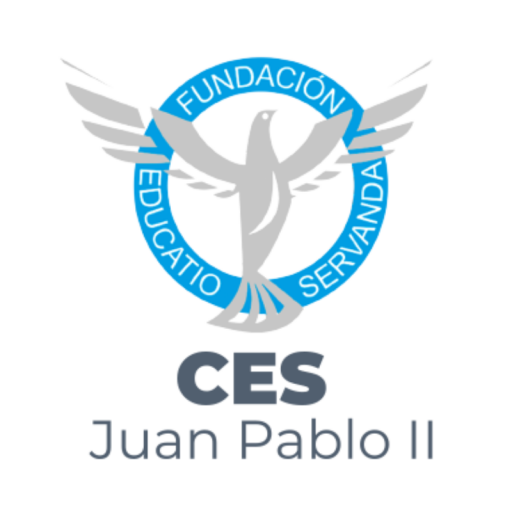
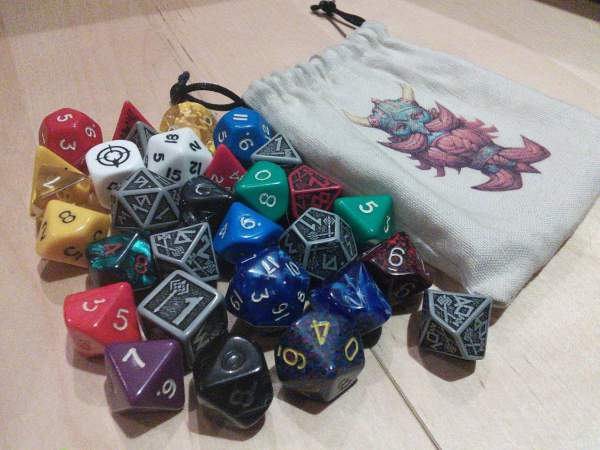
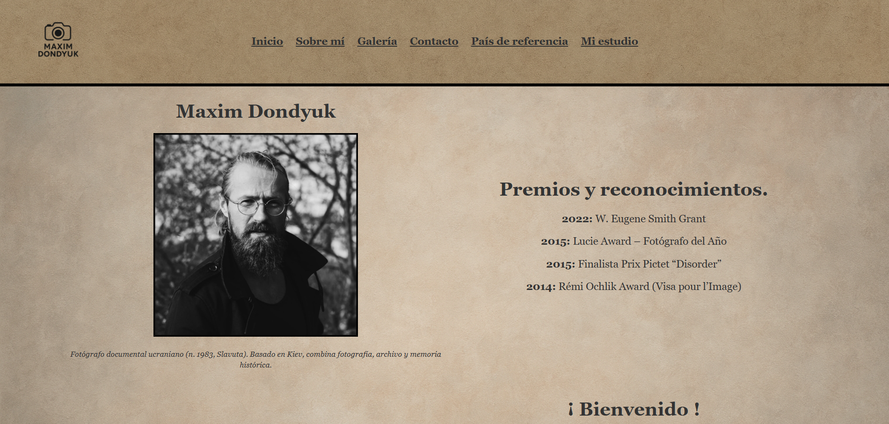
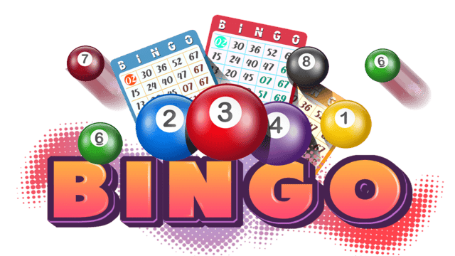

Desarrollador Fullstack
Desarrollador Fullstack con mentalidad analítica y creativa. Me dedico a diseñar arquitecturas digitales completas, desde la base de datos hasta el píxel final en pantalla.
Comprometido con la creación de software de alto impacto, priorizando siempre la escalabilidad y la experiencia de usuario.
Stack Tecnológico en expansión:
• Backend: Especialización en ecosistema Java (Spring Boot).
• Frontend: Desarrollo de SPA con React.
• Data: Versatilidad en SQL (PostgreSQL) y NoSQL (MongoDB).
Me considero una persona curiosa y proactiva. No me limito a escribir líneas de código; me gusta entender el porqué de las cosas.
Fuera de la pantalla, aplico mi lógica en cualquier ámbito y mantengo la disciplina, lo que me ayuda a tener la mente despejada para resolver problemas complejos.
Busco formar parte de un equipo donde la innovación tecnológica sea el motor. Me motiva el sector tecnológico por su constante evolución.
Mi objetivo es consolidarme como Desarrollador Full Stack, con especial predilección por arquitecturas backend robustas (Java/Spring) sin descuidar el frontend.
Más allá de mis habilidades técnicas, valoro la comunicación transparente y el compañerismo.
Un breve resumen de mi experiencia laboral y formación académica.
Desarrollo de aplicaciones utilizando:
• HTML, CSS, JS, JAVA, Python y Spring Boot.
Gestión de bases de datos con mySQL.
Mantenimiento y transporte de máquinas recreativas.

Sistema backend robusto para la gestión de un juego de rol inventado por el profesor.

Plataforma web documental sobre el trabajo del fotógrafo en zonas de conflicto.

Implementación de un sistema backend para bingo. Generación de números aleatorios y gestión de jugadores.
Nueva API REST en desarrollo
Proyecto CSS, JavaScript
Estoy disponible para proyectos freelance y oportunidades laborales a tiempo completo. ¡Conectemos!